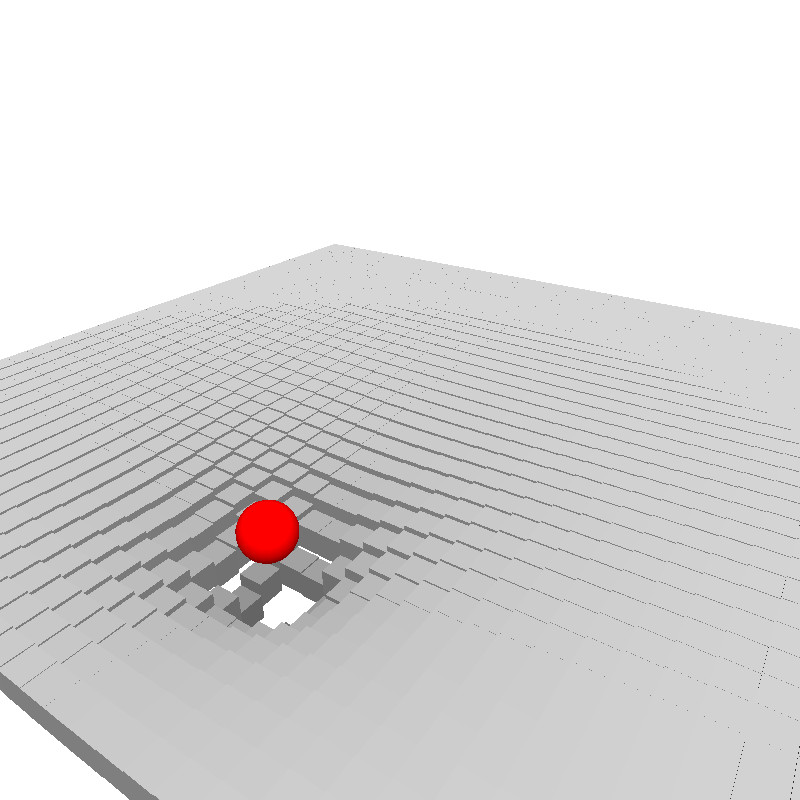
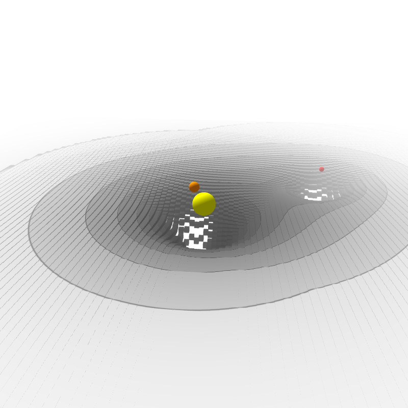
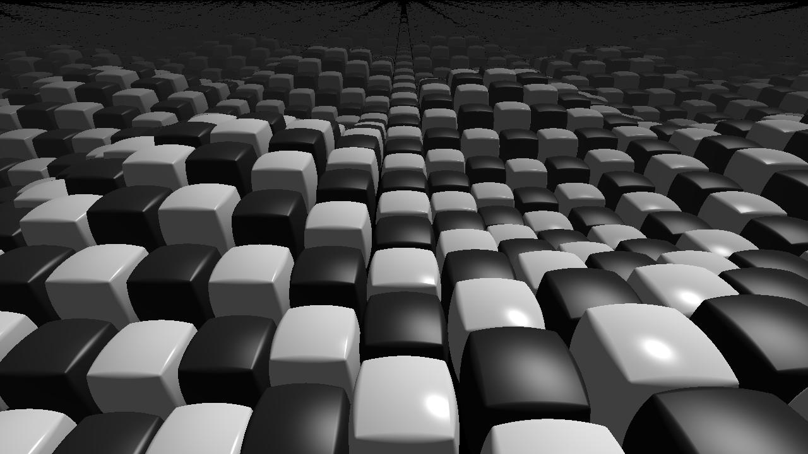
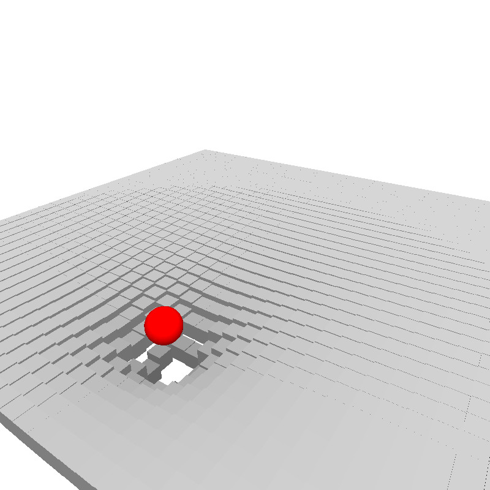
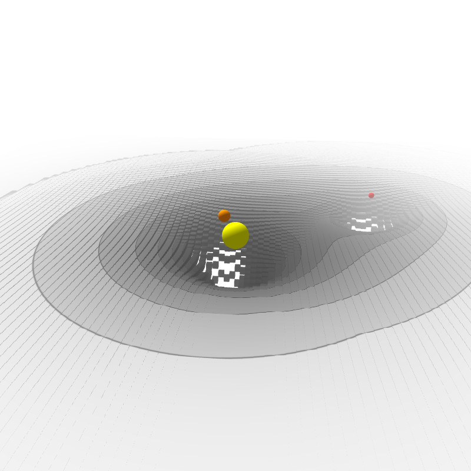
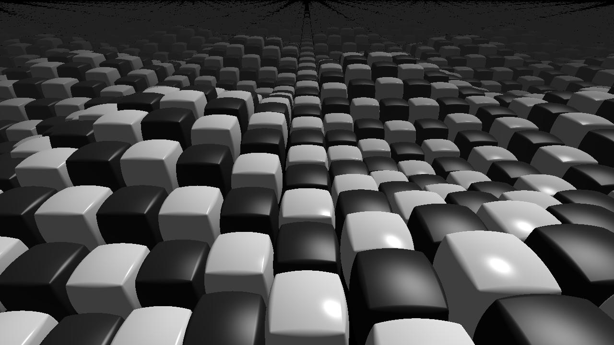

Processing 3D / WebGL & shaders / Raymarching | Creative Code Paris | 20 mars 2017
Présentations:
Exemples et démos:
- Rendu 3D: Lighting (Processing.js)
- WebGL: 3D Gravity Well (Processing.js)
- WebGL: 3D Gravity Well (WebGL)
- WebGL: 3D Gravity Well Plus (WebGL)
- Raymarching: Signed Distance Functions (WebGL / shadertoy)
- Raymarching: Demo (WebGL / shadertoy) [ Base - Sphère - Diffuse - Specular - Répétition - Cubes - Interpolation - Matériaux - Rotation - Brouillard - Élévation ]